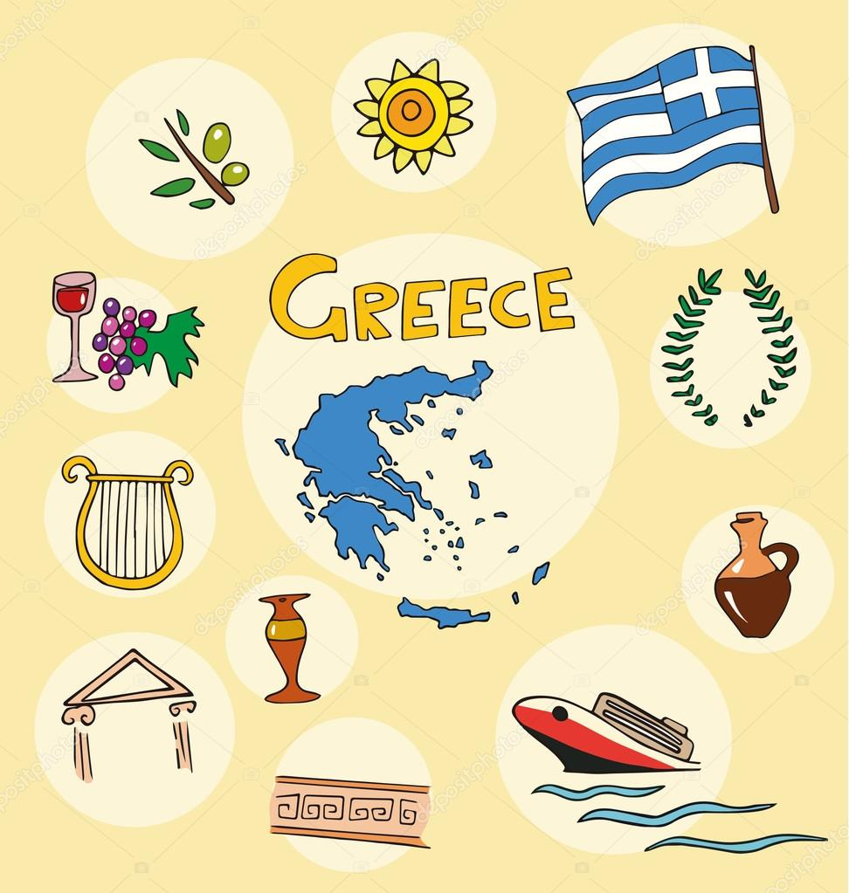
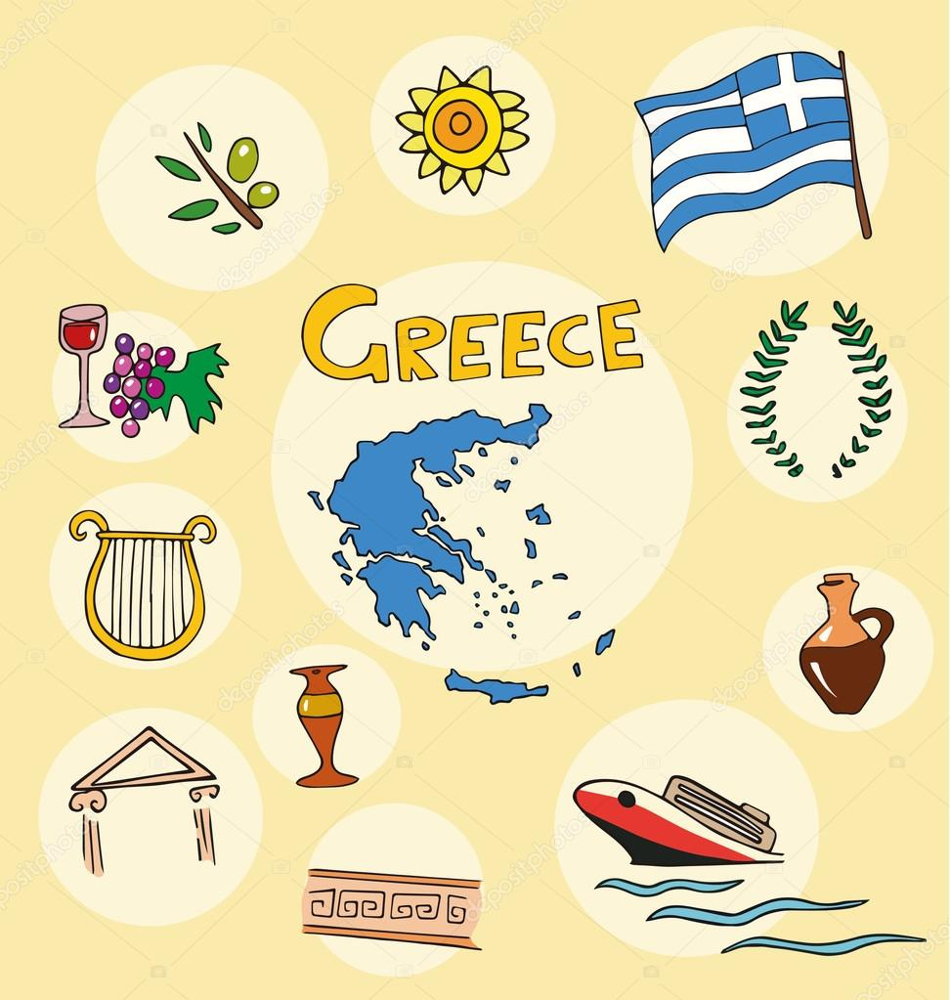
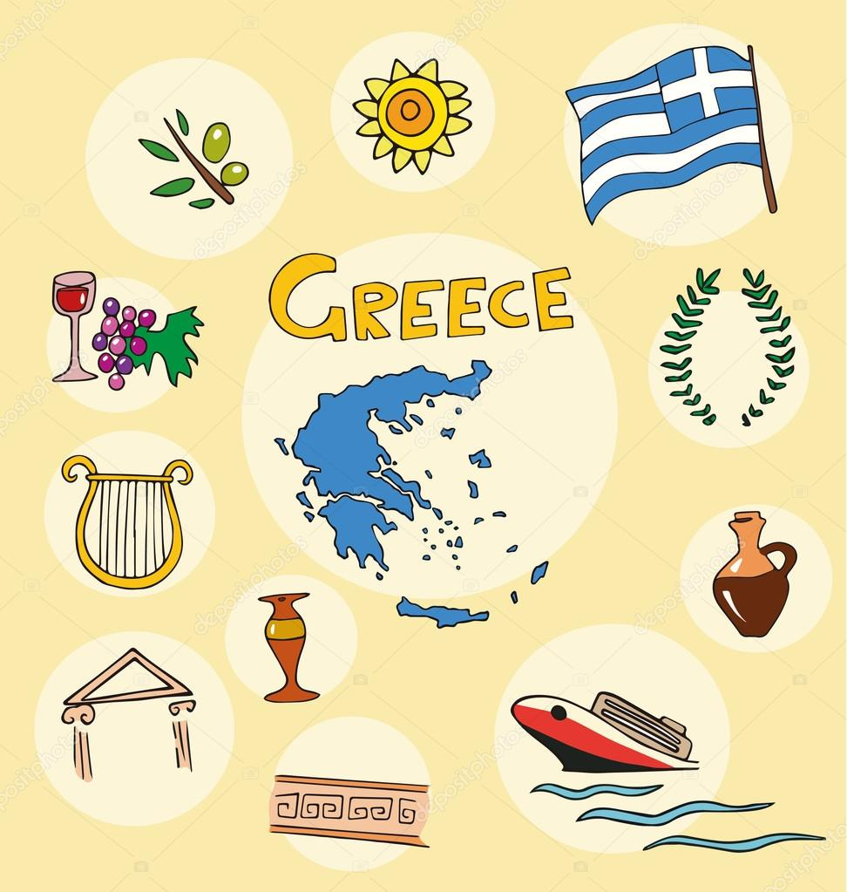
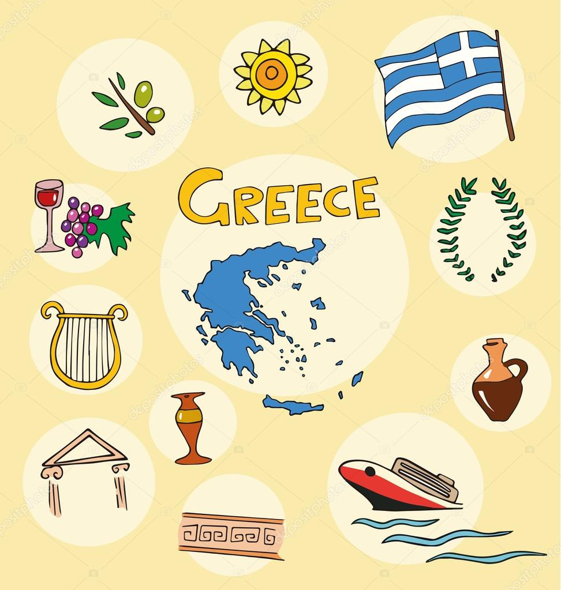

Explore Greece
 



The birthplace of democracy, Greece, is ancient sun-bleached ruins piercing blue skies, the balmy Aegean lapping an endless coastline and a culture alive with passionate music, wonderful cuisine and thrill-seeking activities. Greece is a country that is at once European, Balkan, Mediterranean, and Near Eastern. A Greek legend has it that God distributed soil through a sieve and used the stones that remained to build Greece.
Things to do in Greece

The Acropolis is the most extensive ancient Greek architectural complex that is still in existence today. Perched atop a hill, this must-visit monument is a popular UNESCO world heritage site and a feast to the eyes of every history lover and admirer of the ancient ruins of Greece. The Parthenon is the most significant monument of the Acropolis and sits proudly on the crown of the hill, symbolizing the everlasting beauty of ancient Athens. The Ancient Agora on the northwest side of the Acropolis was a famous place of gathering in the ancient city.
Santorini, known since ancient times as Thira, is one of the most famous islands in the world. Fira is the picturesque capital of the island perched on the top edge of the Caldera, 260m above sea level, offering breathtaking views to the Aegean Sea and the island of Nea Kameni. Along the border of the caldera you will come across the renowned villages of Oia - the whole village looks like a work of art as the houses are carved into the lava rock - Imerovigli and Firostefani, which are the best spots for you to get your sunset views.

Small Greek island promotes "no swimming pool" holidays for travellers
The small Greek island of Lipsi in the Dodecanese is seeking to promote an authentic and sustainable holiday experience this year, ditching swimming pools and sunbeds in favor of more environmentaly-friendly ways to enjoy the island. With the support of the municipality, local residents and tourism professionals are discouraging the construction of swimming pools hoping to stop water waste in a country plagued by drought and high temperatures. It was recently announced that Lipsi is working on becoming a model destination for water autonomy with zero water waste, while implementing a groundbreaking program for the planting of seabed gardens, which could provide future solutions for dealing with global pollution.
Festival dedicated to Maria Callas on centenary of her birth
The music from “Madame Butterfly” and other major operas is known to Greek audiences largely through the recorded performances of Maria Callas, the US-born Greek artist who died in 1977 and is still revered here. For theatergoers in Athens, watching the tragic story of the young geisha Cio-Cio-San unfold in Puccini’s emotionally charged classic has become a familiar favorite at the Odeon of Herodes Atticus, the stone theater the Romans built at the foot of the Acropolis more than 1,800 years ago.
| Price | |
|---|---|
| Ticket From JFK | $917 |
| Hotel for 2 per night | $268 |
| Food per person per day | $40 |
| Attractions and Activities per person | $100 |
| Total Cost per day per person | $1325 |